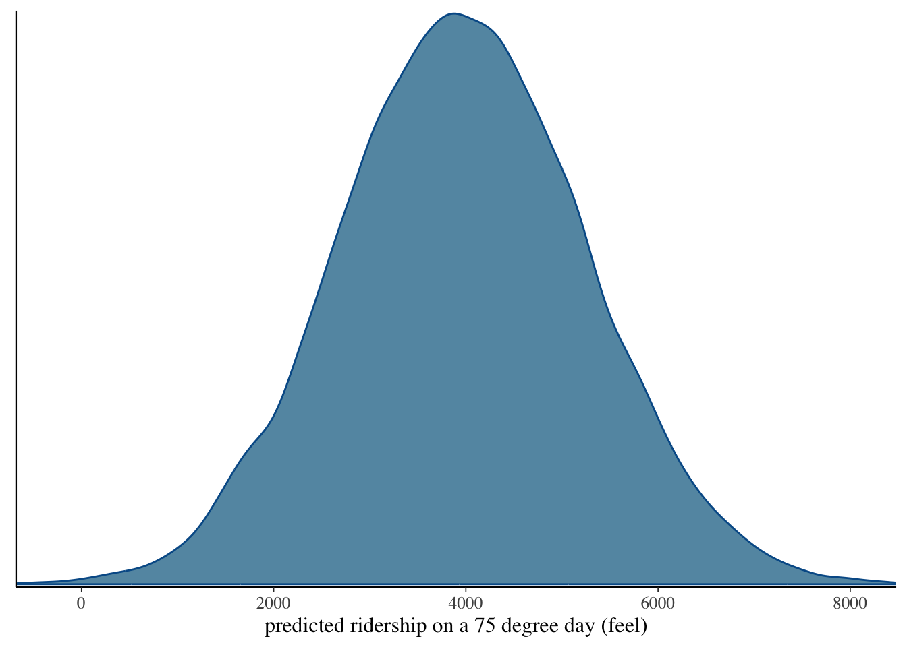
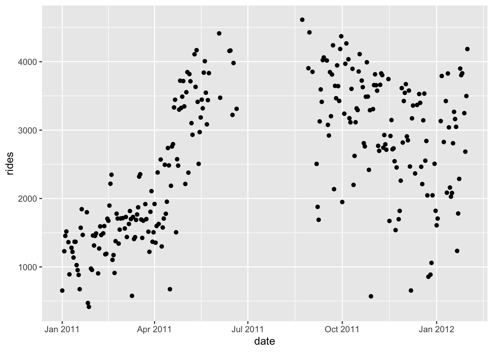
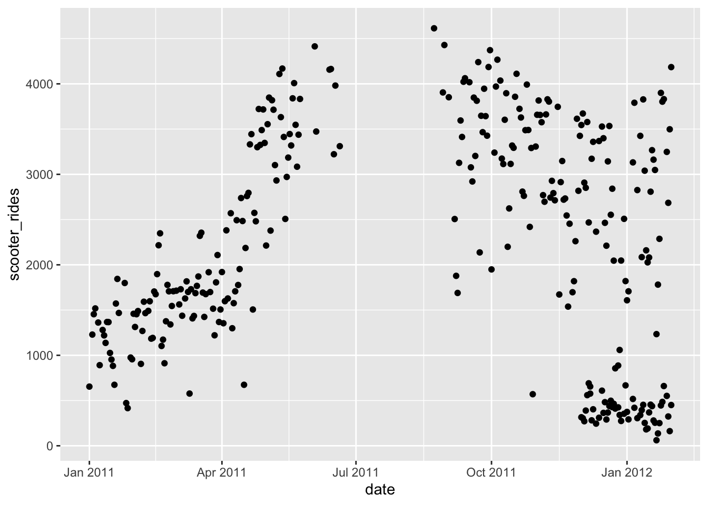
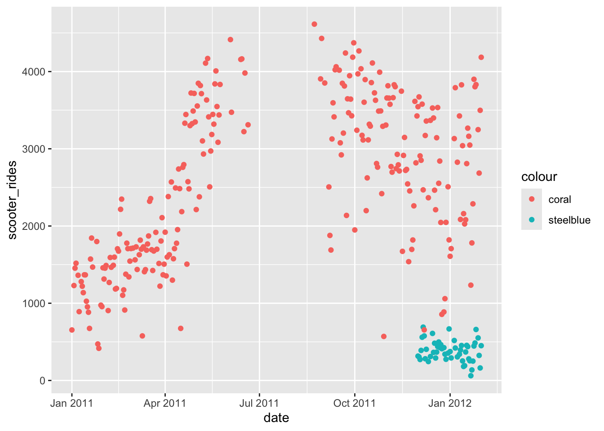
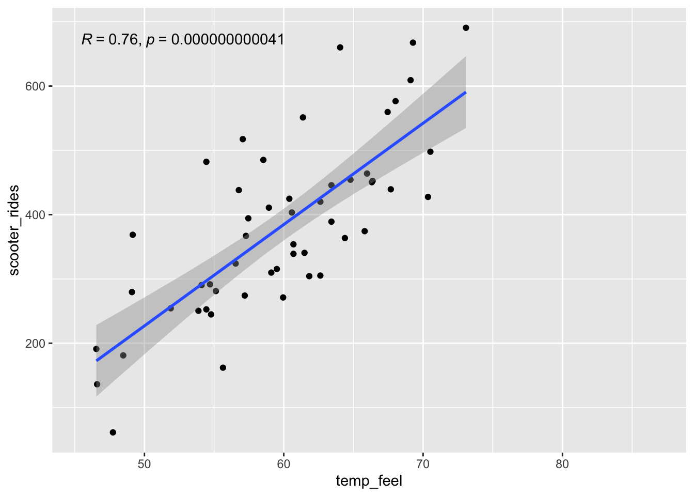
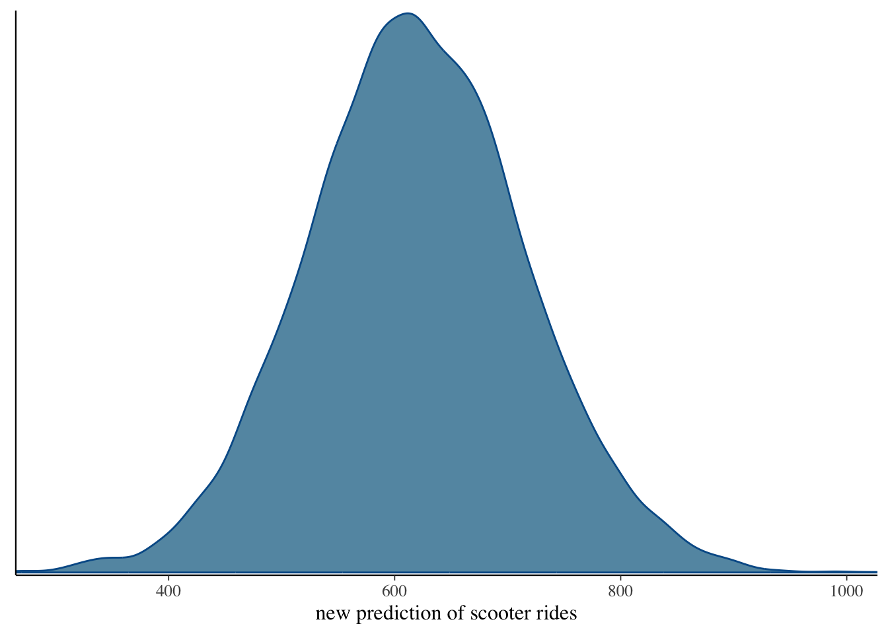
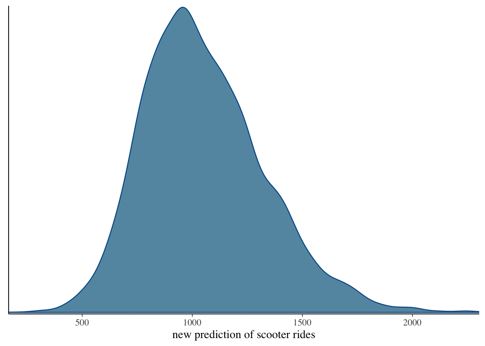

library(bayesrules)
library(tidyverse)
library(rstan)
library(rstanarm)
library(bayesplot)
library(tidybayes)
library(janitor)
library(broom.mixed)
library(ggpubr)
options(scipen = 999)Borrowing Strength in Bayesian Regression
Load Libraries
Overview
Last class, we utilized a Bayesian regression model utilizing stan_glm() to better understand the relationship between temperature and rides. Now, Capital Bikeshare has started to rent scooters. Can we expect the same relationship between temperature and scooter rides as temperature and bike rides? Our scooter data is scarce (3 months) since Capital Bikeshare has only just started offering scooters to ride. As a company, Capital Bikeshare want to know expected ridership for summer (~75 degree days) but currently only has scooter data from December 2011 to February 2012. Can we borrow strength from our temp ~ bike rides model to assist our scooter rides predictions?
Data
data(bikes)Bike rides ~ temp model
bike_model <- stan_glm(rides ~ temp_feel, data = bikes,
family = gaussian,
prior_intercept = normal(5000, 1000),
prior = normal(100, 40),
prior_aux = exponential(0.0008),
chains = 4, iter = 5000*2, seed = 84735)
SAMPLING FOR MODEL 'continuous' NOW (CHAIN 1).
Chain 1:
Chain 1: Gradient evaluation took 4.6e-05 seconds
Chain 1: 1000 transitions using 10 leapfrog steps per transition would take 0.46 seconds.
Chain 1: Adjust your expectations accordingly!
Chain 1:
Chain 1:
Chain 1: Iteration: 1 / 10000 [ 0%] (Warmup)
Chain 1: Iteration: 1000 / 10000 [ 10%] (Warmup)
Chain 1: Iteration: 2000 / 10000 [ 20%] (Warmup)
Chain 1: Iteration: 3000 / 10000 [ 30%] (Warmup)
Chain 1: Iteration: 4000 / 10000 [ 40%] (Warmup)
Chain 1: Iteration: 5000 / 10000 [ 50%] (Warmup)
Chain 1: Iteration: 5001 / 10000 [ 50%] (Sampling)
Chain 1: Iteration: 6000 / 10000 [ 60%] (Sampling)
Chain 1: Iteration: 7000 / 10000 [ 70%] (Sampling)
Chain 1: Iteration: 8000 / 10000 [ 80%] (Sampling)
Chain 1: Iteration: 9000 / 10000 [ 90%] (Sampling)
Chain 1: Iteration: 10000 / 10000 [100%] (Sampling)
Chain 1:
Chain 1: Elapsed Time: 0.27 seconds (Warm-up)
Chain 1: 0.418 seconds (Sampling)
Chain 1: 0.688 seconds (Total)
Chain 1:
SAMPLING FOR MODEL 'continuous' NOW (CHAIN 2).
Chain 2:
Chain 2: Gradient evaluation took 1.4e-05 seconds
Chain 2: 1000 transitions using 10 leapfrog steps per transition would take 0.14 seconds.
Chain 2: Adjust your expectations accordingly!
Chain 2:
Chain 2:
Chain 2: Iteration: 1 / 10000 [ 0%] (Warmup)
Chain 2: Iteration: 1000 / 10000 [ 10%] (Warmup)
Chain 2: Iteration: 2000 / 10000 [ 20%] (Warmup)
Chain 2: Iteration: 3000 / 10000 [ 30%] (Warmup)
Chain 2: Iteration: 4000 / 10000 [ 40%] (Warmup)
Chain 2: Iteration: 5000 / 10000 [ 50%] (Warmup)
Chain 2: Iteration: 5001 / 10000 [ 50%] (Sampling)
Chain 2: Iteration: 6000 / 10000 [ 60%] (Sampling)
Chain 2: Iteration: 7000 / 10000 [ 70%] (Sampling)
Chain 2: Iteration: 8000 / 10000 [ 80%] (Sampling)
Chain 2: Iteration: 9000 / 10000 [ 90%] (Sampling)
Chain 2: Iteration: 10000 / 10000 [100%] (Sampling)
Chain 2:
Chain 2: Elapsed Time: 0.336 seconds (Warm-up)
Chain 2: 0.447 seconds (Sampling)
Chain 2: 0.783 seconds (Total)
Chain 2:
SAMPLING FOR MODEL 'continuous' NOW (CHAIN 3).
Chain 3:
Chain 3: Gradient evaluation took 1.6e-05 seconds
Chain 3: 1000 transitions using 10 leapfrog steps per transition would take 0.16 seconds.
Chain 3: Adjust your expectations accordingly!
Chain 3:
Chain 3:
Chain 3: Iteration: 1 / 10000 [ 0%] (Warmup)
Chain 3: Iteration: 1000 / 10000 [ 10%] (Warmup)
Chain 3: Iteration: 2000 / 10000 [ 20%] (Warmup)
Chain 3: Iteration: 3000 / 10000 [ 30%] (Warmup)
Chain 3: Iteration: 4000 / 10000 [ 40%] (Warmup)
Chain 3: Iteration: 5000 / 10000 [ 50%] (Warmup)
Chain 3: Iteration: 5001 / 10000 [ 50%] (Sampling)
Chain 3: Iteration: 6000 / 10000 [ 60%] (Sampling)
Chain 3: Iteration: 7000 / 10000 [ 70%] (Sampling)
Chain 3: Iteration: 8000 / 10000 [ 80%] (Sampling)
Chain 3: Iteration: 9000 / 10000 [ 90%] (Sampling)
Chain 3: Iteration: 10000 / 10000 [100%] (Sampling)
Chain 3:
Chain 3: Elapsed Time: 0.274 seconds (Warm-up)
Chain 3: 0.406 seconds (Sampling)
Chain 3: 0.68 seconds (Total)
Chain 3:
SAMPLING FOR MODEL 'continuous' NOW (CHAIN 4).
Chain 4:
Chain 4: Gradient evaluation took 1.1e-05 seconds
Chain 4: 1000 transitions using 10 leapfrog steps per transition would take 0.11 seconds.
Chain 4: Adjust your expectations accordingly!
Chain 4:
Chain 4:
Chain 4: Iteration: 1 / 10000 [ 0%] (Warmup)
Chain 4: Iteration: 1000 / 10000 [ 10%] (Warmup)
Chain 4: Iteration: 2000 / 10000 [ 20%] (Warmup)
Chain 4: Iteration: 3000 / 10000 [ 30%] (Warmup)
Chain 4: Iteration: 4000 / 10000 [ 40%] (Warmup)
Chain 4: Iteration: 5000 / 10000 [ 50%] (Warmup)
Chain 4: Iteration: 5001 / 10000 [ 50%] (Sampling)
Chain 4: Iteration: 6000 / 10000 [ 60%] (Sampling)
Chain 4: Iteration: 7000 / 10000 [ 70%] (Sampling)
Chain 4: Iteration: 8000 / 10000 [ 80%] (Sampling)
Chain 4: Iteration: 9000 / 10000 [ 90%] (Sampling)
Chain 4: Iteration: 10000 / 10000 [100%] (Sampling)
Chain 4:
Chain 4: Elapsed Time: 0.247 seconds (Warm-up)
Chain 4: 0.421 seconds (Sampling)
Chain 4: 0.668 seconds (Total)
Chain 4: bike_modelstan_glm
family: gaussian [identity]
formula: rides ~ temp_feel
observations: 500
predictors: 2
------
Median MAD_SD
(Intercept) -2195.3 353.8
temp_feel 82.2 5.1
Auxiliary parameter(s):
Median MAD_SD
sigma 1282.5 40.2
------
* For help interpreting the printed output see ?print.stanreg
* For info on the priors used see ?prior_summary.stanregThe slope (or coefficient) for
temp_feelis 82.2, meaning that for every 1 degree increase in perceived temperature, the number of rides increases by an average of 82.2 rides.The MAD_SD of 5.1 reflects the uncertainty in the slope estimate, indicating that the true slope could vary by about 5.1 rides.
In your case, a median σof 1282.5 means that the actual number of rides often deviates from what the model predicts by an average of about 1282.5 rides. This indicates a considerable amount of variability in the data.
- Moderate Variability: The term “moderate variability” suggests that while the model captures some trends (like how temperature affects ridership), there are many factors influencing the number of rides that are not accounted for by temperature alone.
Let’s visualize our models prediction of rides for a 75 degree day (feel)
set.seed(84735)
shortcut_prediction <-
posterior_predict(bike_model, newdata = data.frame(temp_feel = 75))mcmc_dens(shortcut_prediction) +
xlab("predicted ridership on a 75 degree day (feel)")
Scooter Data
bikes_spring_2012 <- bikes %>%
filter(date < "2012-02-01")ggplot(data = bikes_spring_2012, aes(x = date, y = rides)) +
geom_point()
# Set seed for reproducibility
set.seed(123)
# Define the date range for scooter rides
start_date <- as.Date("2011-12-01")
end_date <- as.Date("2012-02-01")
# Mutate the existing bikes_spring_2012 dataframe to add scooter_rides
bikes_scooters <- bikes_spring_2012 %>%
mutate(
# Parameters for scooter rides: correlation 0.89 with temp_feel, mean 500, sd 200
correlation = 0.89,
mean_scooter_rides = 500,
sd_scooter_rides = 200,
# Generate random noise
noise = rnorm(n(), mean = 0, sd = sd_scooter_rides * sqrt(1 - correlation^2)),
# Generate scooter rides with correlation to temp_feel, only for the specified dates
scooter_rides = ifelse(
date >= start_date & date <= end_date,
mean_scooter_rides + correlation * (temp_feel - mean(temp_feel)) * (sd_scooter_rides / sd(temp_feel)) + noise,
NA_real_ # Set NA for other dates
),
# Ensure scooter_rides have no negative values
scooter_rides = pmax(0, scooter_rides)
) %>%
# Select only relevant columns
select(-correlation, -mean_scooter_rides, -sd_scooter_rides, -noise)Exploratory Data Analysis
Visualizing Together
ggplot(data = bikes_scooters) +
geom_point(aes(x = date, y = scooter_rides)) +
geom_point(aes(x = date, y = rides)) Warning: Removed 217 rows containing missing values or values outside the scale range
(`geom_point()`).
ggplot(data = bikes_scooters) +
geom_point(aes(x = date, y = scooter_rides, color = "steelblue")) +
geom_point(aes(x = date, y = rides, color = "coral")) Warning: Removed 217 rows containing missing values or values outside the scale range
(`geom_point()`).
ggplot(data = bikes_scooters, aes(x = temp_feel, y = scooter_rides)) +
geom_point() +
geom_smooth(method = "lm") +
stat_cor() `geom_smooth()` using formula = 'y ~ x'Warning: Removed 217 rows containing non-finite outside the scale range
(`stat_smooth()`).Warning: Removed 217 rows containing non-finite outside the scale range
(`stat_cor()`).Warning: Removed 217 rows containing missing values or values outside the scale range
(`geom_point()`).
Individual Scooter Model
scooter_model_solo <- stan_glm(
scooter_rides ~ temp_feel,
data = bikes_scooters,
family = gaussian,
chains = 4,
iter = 5000)
SAMPLING FOR MODEL 'continuous' NOW (CHAIN 1).
Chain 1:
Chain 1: Gradient evaluation took 1.9e-05 seconds
Chain 1: 1000 transitions using 10 leapfrog steps per transition would take 0.19 seconds.
Chain 1: Adjust your expectations accordingly!
Chain 1:
Chain 1:
Chain 1: Iteration: 1 / 5000 [ 0%] (Warmup)
Chain 1: Iteration: 500 / 5000 [ 10%] (Warmup)
Chain 1: Iteration: 1000 / 5000 [ 20%] (Warmup)
Chain 1: Iteration: 1500 / 5000 [ 30%] (Warmup)
Chain 1: Iteration: 2000 / 5000 [ 40%] (Warmup)
Chain 1: Iteration: 2500 / 5000 [ 50%] (Warmup)
Chain 1: Iteration: 2501 / 5000 [ 50%] (Sampling)
Chain 1: Iteration: 3000 / 5000 [ 60%] (Sampling)
Chain 1: Iteration: 3500 / 5000 [ 70%] (Sampling)
Chain 1: Iteration: 4000 / 5000 [ 80%] (Sampling)
Chain 1: Iteration: 4500 / 5000 [ 90%] (Sampling)
Chain 1: Iteration: 5000 / 5000 [100%] (Sampling)
Chain 1:
Chain 1: Elapsed Time: 0.113 seconds (Warm-up)
Chain 1: 0.106 seconds (Sampling)
Chain 1: 0.219 seconds (Total)
Chain 1:
SAMPLING FOR MODEL 'continuous' NOW (CHAIN 2).
Chain 2:
Chain 2: Gradient evaluation took 1.4e-05 seconds
Chain 2: 1000 transitions using 10 leapfrog steps per transition would take 0.14 seconds.
Chain 2: Adjust your expectations accordingly!
Chain 2:
Chain 2:
Chain 2: Iteration: 1 / 5000 [ 0%] (Warmup)
Chain 2: Iteration: 500 / 5000 [ 10%] (Warmup)
Chain 2: Iteration: 1000 / 5000 [ 20%] (Warmup)
Chain 2: Iteration: 1500 / 5000 [ 30%] (Warmup)
Chain 2: Iteration: 2000 / 5000 [ 40%] (Warmup)
Chain 2: Iteration: 2500 / 5000 [ 50%] (Warmup)
Chain 2: Iteration: 2501 / 5000 [ 50%] (Sampling)
Chain 2: Iteration: 3000 / 5000 [ 60%] (Sampling)
Chain 2: Iteration: 3500 / 5000 [ 70%] (Sampling)
Chain 2: Iteration: 4000 / 5000 [ 80%] (Sampling)
Chain 2: Iteration: 4500 / 5000 [ 90%] (Sampling)
Chain 2: Iteration: 5000 / 5000 [100%] (Sampling)
Chain 2:
Chain 2: Elapsed Time: 0.15 seconds (Warm-up)
Chain 2: 0.102 seconds (Sampling)
Chain 2: 0.252 seconds (Total)
Chain 2:
SAMPLING FOR MODEL 'continuous' NOW (CHAIN 3).
Chain 3:
Chain 3: Gradient evaluation took 1.2e-05 seconds
Chain 3: 1000 transitions using 10 leapfrog steps per transition would take 0.12 seconds.
Chain 3: Adjust your expectations accordingly!
Chain 3:
Chain 3:
Chain 3: Iteration: 1 / 5000 [ 0%] (Warmup)
Chain 3: Iteration: 500 / 5000 [ 10%] (Warmup)
Chain 3: Iteration: 1000 / 5000 [ 20%] (Warmup)
Chain 3: Iteration: 1500 / 5000 [ 30%] (Warmup)
Chain 3: Iteration: 2000 / 5000 [ 40%] (Warmup)
Chain 3: Iteration: 2500 / 5000 [ 50%] (Warmup)
Chain 3: Iteration: 2501 / 5000 [ 50%] (Sampling)
Chain 3: Iteration: 3000 / 5000 [ 60%] (Sampling)
Chain 3: Iteration: 3500 / 5000 [ 70%] (Sampling)
Chain 3: Iteration: 4000 / 5000 [ 80%] (Sampling)
Chain 3: Iteration: 4500 / 5000 [ 90%] (Sampling)
Chain 3: Iteration: 5000 / 5000 [100%] (Sampling)
Chain 3:
Chain 3: Elapsed Time: 0.145 seconds (Warm-up)
Chain 3: 0.091 seconds (Sampling)
Chain 3: 0.236 seconds (Total)
Chain 3:
SAMPLING FOR MODEL 'continuous' NOW (CHAIN 4).
Chain 4:
Chain 4: Gradient evaluation took 8e-06 seconds
Chain 4: 1000 transitions using 10 leapfrog steps per transition would take 0.08 seconds.
Chain 4: Adjust your expectations accordingly!
Chain 4:
Chain 4:
Chain 4: Iteration: 1 / 5000 [ 0%] (Warmup)
Chain 4: Iteration: 500 / 5000 [ 10%] (Warmup)
Chain 4: Iteration: 1000 / 5000 [ 20%] (Warmup)
Chain 4: Iteration: 1500 / 5000 [ 30%] (Warmup)
Chain 4: Iteration: 2000 / 5000 [ 40%] (Warmup)
Chain 4: Iteration: 2500 / 5000 [ 50%] (Warmup)
Chain 4: Iteration: 2501 / 5000 [ 50%] (Sampling)
Chain 4: Iteration: 3000 / 5000 [ 60%] (Sampling)
Chain 4: Iteration: 3500 / 5000 [ 70%] (Sampling)
Chain 4: Iteration: 4000 / 5000 [ 80%] (Sampling)
Chain 4: Iteration: 4500 / 5000 [ 90%] (Sampling)
Chain 4: Iteration: 5000 / 5000 [100%] (Sampling)
Chain 4:
Chain 4: Elapsed Time: 0.099 seconds (Warm-up)
Chain 4: 0.096 seconds (Sampling)
Chain 4: 0.195 seconds (Total)
Chain 4: scooter_prediction_solo <-
posterior_predict(scooter_model_solo, newdata = data.frame(temp_feel = 75))mcmc_dens(scooter_prediction_solo) +
xlab("new prediction of scooter rides")
Borrowed Strength Scooter Model
scooter_model_borrowed_strength <- stan_glm(
scooter_rides ~ temp_feel,
data = bikes_scooters,
family = gaussian,
prior_intercept = normal(-2195.3, 353.8), # Prior for intercept
prior = normal(82.2, 5.1), # Prior for temp_feel
prior_aux = exponential(1 / 1282.5), # Prior for sigma (standard deviation)
chains = 4,
iter = 5000,
seed = 84735
)
SAMPLING FOR MODEL 'continuous' NOW (CHAIN 1).
Chain 1:
Chain 1: Gradient evaluation took 1.7e-05 seconds
Chain 1: 1000 transitions using 10 leapfrog steps per transition would take 0.17 seconds.
Chain 1: Adjust your expectations accordingly!
Chain 1:
Chain 1:
Chain 1: Iteration: 1 / 5000 [ 0%] (Warmup)
Chain 1: Iteration: 500 / 5000 [ 10%] (Warmup)
Chain 1: Iteration: 1000 / 5000 [ 20%] (Warmup)
Chain 1: Iteration: 1500 / 5000 [ 30%] (Warmup)
Chain 1: Iteration: 2000 / 5000 [ 40%] (Warmup)
Chain 1: Iteration: 2500 / 5000 [ 50%] (Warmup)
Chain 1: Iteration: 2501 / 5000 [ 50%] (Sampling)
Chain 1: Iteration: 3000 / 5000 [ 60%] (Sampling)
Chain 1: Iteration: 3500 / 5000 [ 70%] (Sampling)
Chain 1: Iteration: 4000 / 5000 [ 80%] (Sampling)
Chain 1: Iteration: 4500 / 5000 [ 90%] (Sampling)
Chain 1: Iteration: 5000 / 5000 [100%] (Sampling)
Chain 1:
Chain 1: Elapsed Time: 0.33 seconds (Warm-up)
Chain 1: 0.241 seconds (Sampling)
Chain 1: 0.571 seconds (Total)
Chain 1:
SAMPLING FOR MODEL 'continuous' NOW (CHAIN 2).
Chain 2:
Chain 2: Gradient evaluation took 1.8e-05 seconds
Chain 2: 1000 transitions using 10 leapfrog steps per transition would take 0.18 seconds.
Chain 2: Adjust your expectations accordingly!
Chain 2:
Chain 2:
Chain 2: Iteration: 1 / 5000 [ 0%] (Warmup)
Chain 2: Iteration: 500 / 5000 [ 10%] (Warmup)
Chain 2: Iteration: 1000 / 5000 [ 20%] (Warmup)
Chain 2: Iteration: 1500 / 5000 [ 30%] (Warmup)
Chain 2: Iteration: 2000 / 5000 [ 40%] (Warmup)
Chain 2: Iteration: 2500 / 5000 [ 50%] (Warmup)
Chain 2: Iteration: 2501 / 5000 [ 50%] (Sampling)
Chain 2: Iteration: 3000 / 5000 [ 60%] (Sampling)
Chain 2: Iteration: 3500 / 5000 [ 70%] (Sampling)
Chain 2: Iteration: 4000 / 5000 [ 80%] (Sampling)
Chain 2: Iteration: 4500 / 5000 [ 90%] (Sampling)
Chain 2: Iteration: 5000 / 5000 [100%] (Sampling)
Chain 2:
Chain 2: Elapsed Time: 0.288 seconds (Warm-up)
Chain 2: 0.215 seconds (Sampling)
Chain 2: 0.503 seconds (Total)
Chain 2:
SAMPLING FOR MODEL 'continuous' NOW (CHAIN 3).
Chain 3:
Chain 3: Gradient evaluation took 1.5e-05 seconds
Chain 3: 1000 transitions using 10 leapfrog steps per transition would take 0.15 seconds.
Chain 3: Adjust your expectations accordingly!
Chain 3:
Chain 3:
Chain 3: Iteration: 1 / 5000 [ 0%] (Warmup)
Chain 3: Iteration: 500 / 5000 [ 10%] (Warmup)
Chain 3: Iteration: 1000 / 5000 [ 20%] (Warmup)
Chain 3: Iteration: 1500 / 5000 [ 30%] (Warmup)
Chain 3: Iteration: 2000 / 5000 [ 40%] (Warmup)
Chain 3: Iteration: 2500 / 5000 [ 50%] (Warmup)
Chain 3: Iteration: 2501 / 5000 [ 50%] (Sampling)
Chain 3: Iteration: 3000 / 5000 [ 60%] (Sampling)
Chain 3: Iteration: 3500 / 5000 [ 70%] (Sampling)
Chain 3: Iteration: 4000 / 5000 [ 80%] (Sampling)
Chain 3: Iteration: 4500 / 5000 [ 90%] (Sampling)
Chain 3: Iteration: 5000 / 5000 [100%] (Sampling)
Chain 3:
Chain 3: Elapsed Time: 0.253 seconds (Warm-up)
Chain 3: 0.185 seconds (Sampling)
Chain 3: 0.438 seconds (Total)
Chain 3:
SAMPLING FOR MODEL 'continuous' NOW (CHAIN 4).
Chain 4:
Chain 4: Gradient evaluation took 1.4e-05 seconds
Chain 4: 1000 transitions using 10 leapfrog steps per transition would take 0.14 seconds.
Chain 4: Adjust your expectations accordingly!
Chain 4:
Chain 4:
Chain 4: Iteration: 1 / 5000 [ 0%] (Warmup)
Chain 4: Iteration: 500 / 5000 [ 10%] (Warmup)
Chain 4: Iteration: 1000 / 5000 [ 20%] (Warmup)
Chain 4: Iteration: 1500 / 5000 [ 30%] (Warmup)
Chain 4: Iteration: 2000 / 5000 [ 40%] (Warmup)
Chain 4: Iteration: 2500 / 5000 [ 50%] (Warmup)
Chain 4: Iteration: 2501 / 5000 [ 50%] (Sampling)
Chain 4: Iteration: 3000 / 5000 [ 60%] (Sampling)
Chain 4: Iteration: 3500 / 5000 [ 70%] (Sampling)
Chain 4: Iteration: 4000 / 5000 [ 80%] (Sampling)
Chain 4: Iteration: 4500 / 5000 [ 90%] (Sampling)
Chain 4: Iteration: 5000 / 5000 [100%] (Sampling)
Chain 4:
Chain 4: Elapsed Time: 0.252 seconds (Warm-up)
Chain 4: 0.229 seconds (Sampling)
Chain 4: 0.481 seconds (Total)
Chain 4: scooter_model_borrowed_strengthstan_glm
family: gaussian [identity]
formula: scooter_rides ~ temp_feel
observations: 52
predictors: 2
------
Median MAD_SD
(Intercept) -2372.6 669.8
temp_feel 45.8 11.0
Auxiliary parameter(s):
Median MAD_SD
sigma 219.3 70.6
------
* For help interpreting the printed output see ?print.stanreg
* For info on the priors used see ?prior_summary.stanregscooter_prediction_borrowed_strength <-
posterior_predict(scooter_model_borrowed_strength, newdata = data.frame(temp_feel = 75))mcmc_dens(scooter_prediction_borrowed_strength) +
xlab("new prediction of scooter rides")